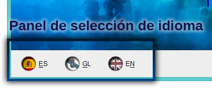

goParty es una aplicación para facilitar la gestión y organización de fiestas y eventos para albergar cualquier tipo de celebración. En muy pocos clicks podrás preparar una fiesta que se adecúe perfectamente a tus posibilidades sin ninguna dificultad. Los pasos a seguir para la organización del envite son lo siguientes:

Si en algún momento consideras que ya no quieres organizar el pedido siempre podrás cancelarlo en cualquier momento del proceso haciendo uso del botón Cancelar que podrás encontrar en la esquina inferior derecha de la aplicación, cancelar el pedido significar� cerrar sesi�n y perder todo el progreso que hayas hecho en la planificaci�n, pi�nsalo bien antes de hacerlo, si lo que quieres es cambiar de usuario o usar una cuenta de invitado no hace falta que canceles pedido, siempre puedes cerrar sesi�n y mantener el progreso.
Puedes cerrar la aplicaci�n desde el bot�n Salir de la pesta�a de inicio de sesi�n o usando la cruz de cerrado, se te pedir� que confirmes que deseas hacerlo.
goParty est� disponible en tres idiomas: espa�ol, gallego e ingl�s; y en cualquier momento del proceso podr�s alternar entre estos tres idiomas haciendo uso de los botones de selecci�n idioma que encontrar�s en la esquina inferior de la aplicaci�n, o bien empleando los mnem�nicos asociados a los mismos.


goParty es una aplicaci�n desarrollada para el m�dulo de evaluaci�n de la asignatura de Comunicaci�n Persona-M�quina en el grado de Ingenier�a Inform�tica del Software de la Universidad de Oviedo. Autor: Ricardo Soto Est�vez, uo265710 Versi�n: 1.01